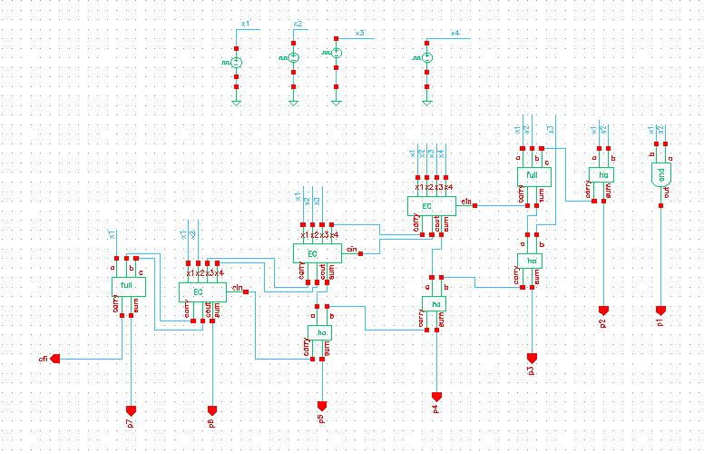
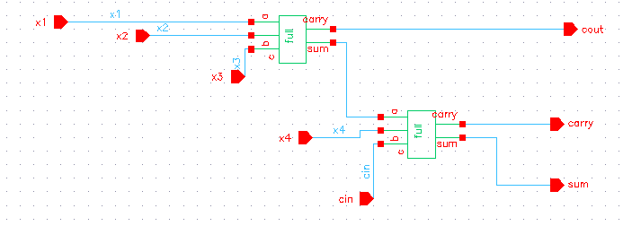

Projects

Memory project in verilog
A memory project in Verilog models storage elements like RAM or ROM, where data can be written to or read from specific addresses. It typically uses register arrays with address, data, clock, and control signals (read/write enable). Such designs help simulate and implement cache, buffers, or main memory in digital systems.

FIFO project in Verilog
A FIFO (First-In-First-Out) project in Verilog is used to temporarily store data so that the first written data is the first to be read. It typically has write pointer, read pointer, memory array, full and empty flags to manage data flow. FIFO is widely used in data buffering, clock domain crossing, and communication systems.


Project on Analysis of Approximate Multipliers using FinFET
Designed and analyzed six unsigned 4-bit approximate multiplier architectures for low-power digital systems. The designs were implemented using CMOS and FinFET technologies and evaluated based on power consumption and critical path delay. The best-performing architecture achieved up to 96.61% power reduction and 85.73% delay improvement compared to an exact multiplier, demonstrating the effectiveness of approximate computing and FinFET technology for error-tolerant applications.